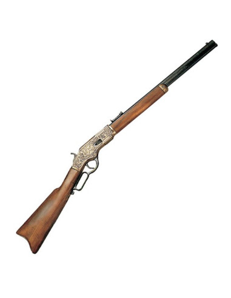

 Aquí ponemos un poco de historia acerca del rifle winchester y su evolución hacia el winchester 73. En el uso común, el rifle Winchester es cualquiera de los rifles de palanca fabricados por la compañía Winchester Repeating Arms, aunque la compañía también ha fabricado muchos rifles de otro tipo de acción. Los rifles Winchester fueron los primeros rifles de repetición, el Winchester de repetición coloquialmente se conoce como «el arma que ganó el Oeste» por su papel predominante en las manos de los colonizadores occidentales. En 1848, el inventor Walter Hunt de Nueva York patentó su «Rifle de repetición» que incorpora un cargador tubular, que es operado por dos palancas y complejas conexiones. El rifle de caza disparó lo que él llamó la «bola de cohetes», una forma temprana de municiones sin casquillo en la que estaba la carga de pólvora en la base de la bala. El diseño de Hunt era frágil e inviable, pero en 1849 Lewis Jennings compró las patentes Hunt y ha desarrollado un nuevo funcionamiento que fue producido en pequeñas cantidades por Robbins y Lawrence de Windsor, Vermont hasta 1852. Horace Smith y Daniel Wesson de Norwich, adquirieron la patente Jennings, de Robbins y Lawrence, así como la tienda de capataz de Benjamin Tyler Henry. Smith hizo varias mejoras en el diseño de Jennings y, en 1855, Smith and Wesson, junto con varios inversionistas crearon una sociedad anónima, la empresa Volcanic Repeating Arms, para la fabricación de pistolas y rifles de palanca. El mayor accionista de esta empresa era Olvier Winchester. Smith crea uno de los primeros cartuchos metálicos fijos que incorpora la bala y la pólvora en una unidad autónoma. El rifle volcanic tuvo un éxito limitado debido al diseño y a la pobre rendimiento. Wesson dejó la empresa poco después de la creación de esta, y Smith siguió 8 meses más y luego creó Smith & Wesson Revolver Company. La empresa Volcanic se mudó a New Haven en 1856, y a finales de ese año se declaró en quiebra. Oliver Winchester compró los activos de la empresa en quiebra desde el resto de accionistas y la reorganizó como la New Haven Arms Company en abril de 1857. Benjamin Henry continuó trabajando con el concepto de cartucho que inicialmente creo Smith. Henry consiguió perfeccionarlo haciéndolo más grande y más potente. Henry también supervisó el rediseño del rifle para así poder utilizar la nueva munición. Del antiguo rifle conservó solo la forma general del mecanismo de cierre y el cargador tubular. El nuevo rifle se convirtió en el rifle Henry de 1860, que fue fabricado por la New Haven Arms Company, y se utiliza en un número considerable por unidades del ejército de la Unión en la Guerra Civil Americana. Los Confederados llamando al rifle Henry «ese maldito rifle yankee que carga el domingo y dispara toda la semana». Después de la Guerra, Oliver Winchester cambia el nombre de la empresa, ahora pasa a llamarse Winchester Repeating Arms Company. La empresa modificó y mejoró el diseño básico del rifle Henry creando así el primer Rifle Winchester: El Modelo 1866. Seguía utilizando el cartucho 44 de Henry. Este rifle tenía una estructura de una aleación de bronce y una recámara mejorada. En 1873 Winchester introdujo el Modelo 1873 con una estructura de acero y con un cartucho más potente que el cartucho Henry. En 1876, en un intento por competir con los poderosos rifles de un solo disparo de la época, Winchester sacó el modelo 1876 (modelo del Centenario). A partir de 1883, John Moses Browning trabajó en colaboración con Winchester, en el diseño de una serie de rifles y escopetas. El Winchester es identificado como un elemento de identidad del vaquero o cowboy. Esta identificación ha sido reforzada principalmente por el cine de Hollywood, que incluso produjo una película, de 1950, llamada Winchester '73 , protagonizada por James Stewart y dirigida por Anthony Mann; o por el «Spaghetti Western», como es el caso de Winchester, uno entre mil. También fue usado en el genocidio ona en Tierra del Fuego en el Siglo XIX. También ha sido utilizado como el apellido de los protagonistas principales Dean y Sam Winchester de la serie Supernatural (Sobrenatural). Gracias sobre todo a los Western, se le conoce como «el arma que conquistó el Oeste». Aunque esto no es del todo preciso, puesto que se introdujo durante la última fase de las Guerras Indias, aunque fue un factor determinante, puesto que dio una gran superioridad de armamento a los colonos frente a los indígenas. No obstante gracias al cine de Hollywood (John Ford y John Wayne), con obras como La diligencia o Centauros del desierto y a los spaghetti western (Sergio Leone y Clint Eastwood), con obras como Por un puñado de dólares y El bueno, el feo y el malo se convirtió en el símbolo de los cowboys (vaqueros). Pese a que el conflicto que marcó el triunfo de los rifles de repetición, fue la Guerra de Secesión Americana (1861-1865), el rifle Winchester no participó en ella por no haberse fabricado todavía.